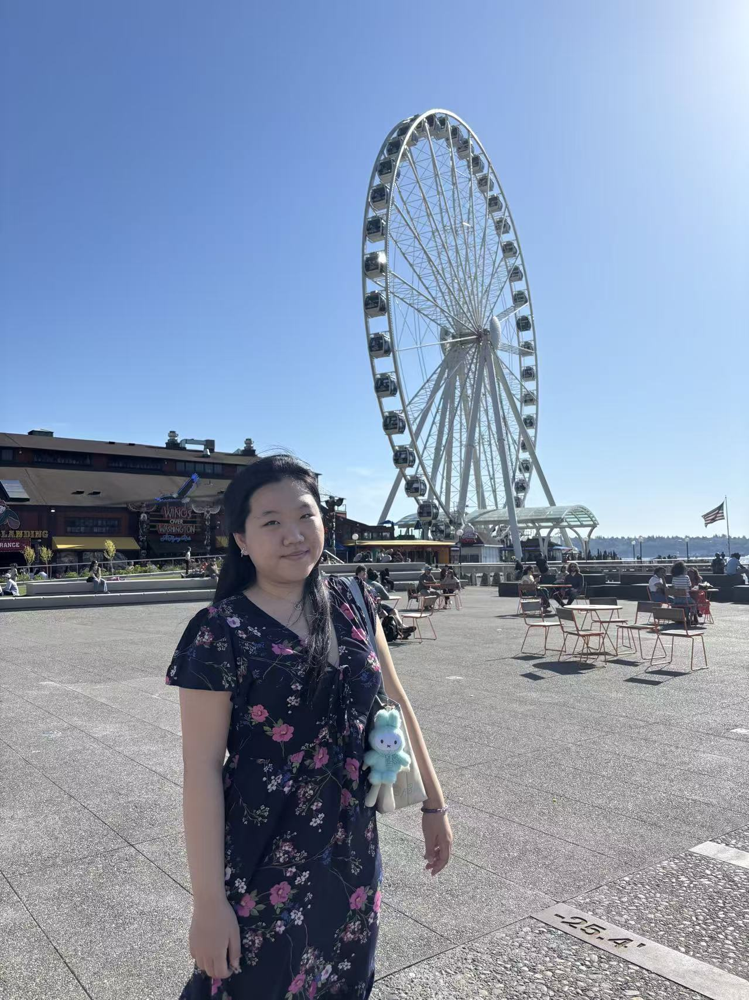

Photography
I like capturing ordinary scenes when the light, color, or timing makes them feel cinematic.

About me
I am a Computer Science co-op student at the University of Waterloo. Professionally, I am drawn to reliable systems, automation, and data-driven products. Personally, I love photography, travel, music, and the process of turning everyday moments into something worth revisiting.
I like capturing ordinary scenes when the light, color, or timing makes them feel cinematic.
Travel helps me notice texture: streets, food, weather, conversations, and tiny visual details.
I keep playlists like little archives of moods, semesters, places, and late-night focus sessions.
Whether it is a data workflow, a website, or a video edit, I like shaping messy material into form.
Contact
Open to software engineering, backend, data engineering, and automation opportunities.